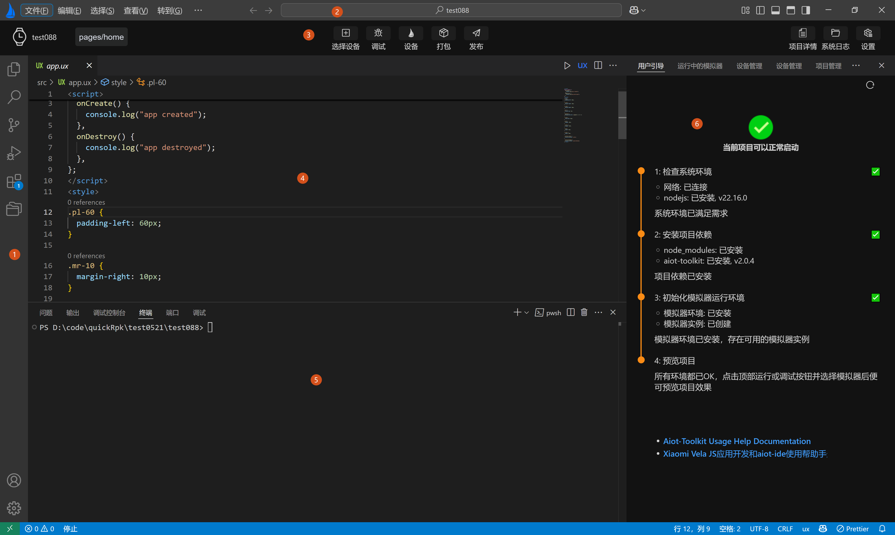
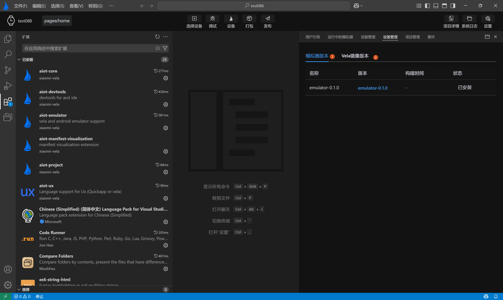
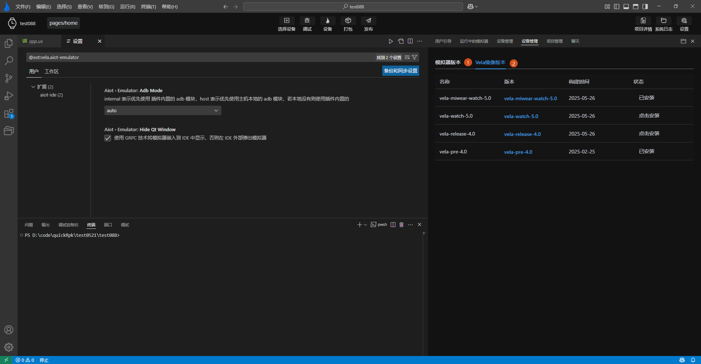

# 了解界面
# 界面布局
AIoT-IDE 的主窗口由几个主要区域构成，具体如下：
1.侧边栏：提供资源管理器、搜索、Git 管理、插件市场、快捷入口等功能。
2.菜单栏：包含文件、编辑、选择、视图、转到、终端、窗口、帮助等菜单项。
3.工具栏：包含修运行、调试、重启、打包、发布等功能按钮选项。
4.代码编辑区：包含代码编辑、定义跳转、代码补全、错误提示等功能，详情参阅代码补全。
5.功能面板：提供问题、输出、终端、调试等面板。
6.模拟器：包含引导页提示，仿真预览、模拟真机操作、截图等功能。

只有通过AIoT-IDE 打开的是一个Xiaomi Vela JS应用，主窗口界面才会如上图所示，AIoT-IDE会通过打开的项目结构自动识别打开的项目是否为Xiaomi Vela JS应用项目。
# 工具栏界面
AIoT-IDE 工具栏界面中含有几个常用功能：
选择设备：选择本地创建的模拟器
调试：编译预览当前打开的Xiaomi Vela JS应用项目，并打开调试面板，调试当前项目
设备：打开设备管理页面，创建不同镜像类型，设备类型的模拟器
打包：将当前Xiaomi Vela JS应用项目打包为rpk
发布：生成 release类型的应用包（RPK）
另外，AIoT-IDE支持直接预览Xiaomi Vela JS应用项目打包后的rpk，可将rpk解压后的目录通过AIoT-IDE打开，可对rpk进行预览。
# 模拟器界面
模拟器界面主要包含三部分:
- 用户引导页
- 模拟器SDK和设备管理更新页
- 模拟器运行预览页面
# 用户引导页
模拟器用户引导页会引导用户初始化Xiaomi Vela JS应用模拟器运行环境。按引导页提示进行操作:
- 1.安装项目依赖，等待项目依赖和环境安装完成，才能正常编译预览Xiaomi Vela JS应用项目
- 2.初始化模拟器环境，模拟器用户引导页会自动当前环境是否具备模拟器运行环境，如不具备可按用户引导页操作，自动安装好模拟器环境

按照上图引导页提示正确操作完毕后，引导页会给出项目可以当前项目可以正常启动的提示，如下图中标签1所示。

注意：出于性能考虑，引导页不会轮询监测项目依赖和模拟器运行环境是否已经具备，当用户选择自行手动安装的方式，安装好项目依赖和模拟器运行环境时，可点击引导页右上角刷新按钮，刷新引导页状态。

# 设备管理页
设备管理页主要分为两部分：
- 1.模拟器管理和真机调试：提供对模拟器的增删改查和运行功能和真机调试
- 2.模拟器SDK管理：提供对模拟器运行环境所需的SDK包的安装和更新


# 模拟器运行预览页面
模拟器预览页是通过grpc技术将运行的模拟器内嵌到AIoT-IDE中，进行预览显示。当项目依赖和模拟器环境具备后，可按如下步骤预览当前项目：
- 1.点击顶部操作栏的选择设备按钮，选择一个或多个要运行的模拟器。
- 2.点击顶部操作栏的调试按钮，运行模拟器，按钮进入loading状态，运行成功后，会变为蓝色。
- 3.底部工具栏开始输出模拟器运行日志，页面从用户引导页自动切换模拟器预览页面。
- 4.模拟器运行成功，模拟器预览页将出现对应模拟器，并将当前打开的Xiaomi Vela JS应用推送到运行的模拟器中。

← 关于AIoT-IDE 新建项目 →